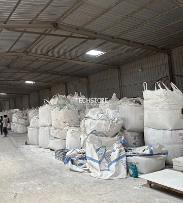
Raw materials
The production story begins with the materials selected for the surface.
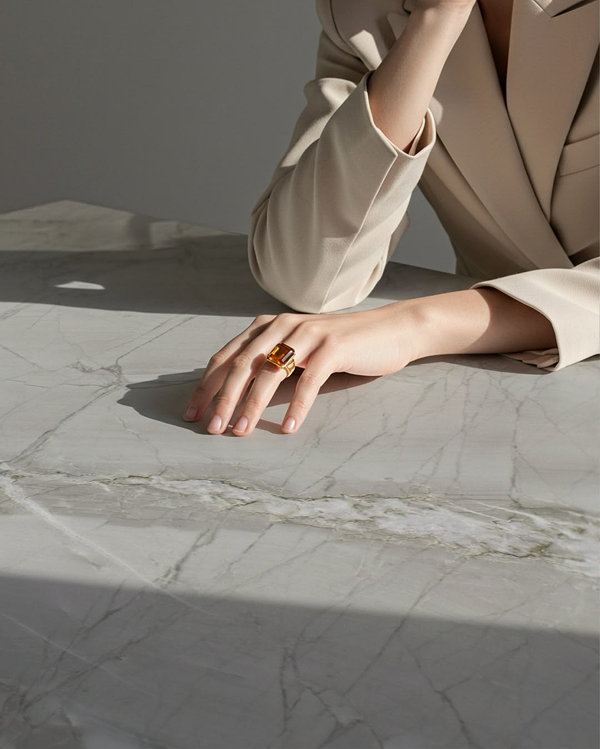
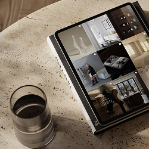
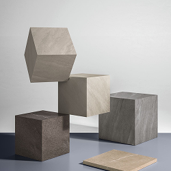
People, materials and machinery shape the Fengyue story. Explore the factory environment and the stone-working equipment featured in our company imagery, then speak with our team about the requirements of your selected surface.
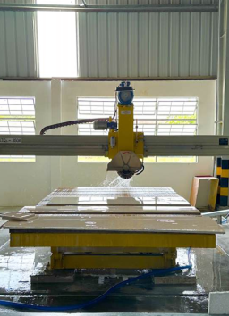
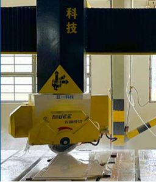
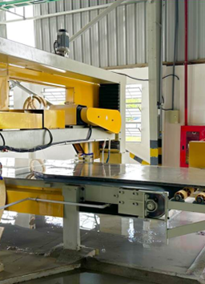
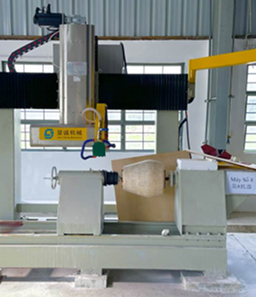
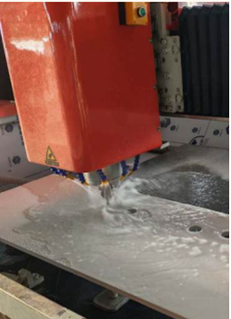
Select a production image to explore the process.

The production story begins with the materials selected for the surface.
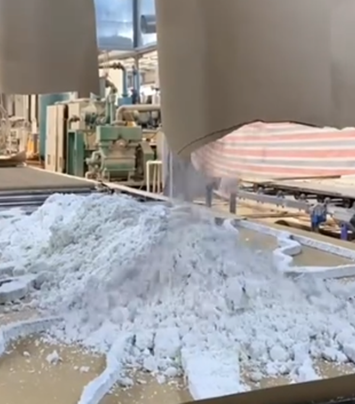
Materials are prepared before the next production stage, with attention to the intended surface design.
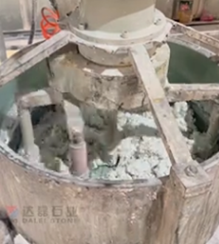
The prepared materials move through mixing and forming as the slab takes shape.
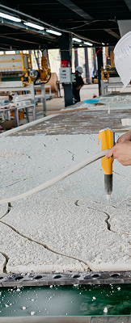
Colour, veining and finishing contribute to the appearance of the completed surface.
Start with the right surface.
Explore colours and veining for kitchen countertops, islands and interior projects. Ask our team for the current collection and availability.
Bring the drawing into focus.
Share the dimensions, edges, cut-outs and finish requirements for your project. We will review the details and confirm the scope with you.
Connect your idea with the material.
Tell us how and where the surface will be used. The conversation starts with your design intent and the specifications your project needs.
Ask Fengyue for the current certificates and technical documents relevant to your selected product, intended application and destination market.

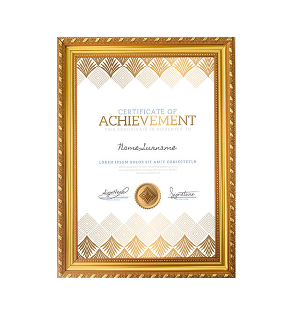

Design review: certificate illustrations are placeholders and do not establish product certification.